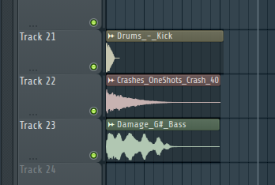

講師紹介
Len Dilemma 先輩
DTM班３回生の先輩
小林さんちのメイドラゴン二期を見よう！
まずは公式サイトだけでもいいから見よう
講義内容
ミックス
修正前
音源
なにが分からないのか
ミックスなんも知らん
適当にリバーブとディレイとパン付けただけ
修正内容
①Masterにlimiterつけて音削るな
なんでlimiterかけたんですか？
→音割れしてる（0dBを超えてしまっている）ところがあるから．．．
limiterで削るということは元の波形を削っている → 本来の音ではなくなってしまう
じゃあそもそもの音を小さくしましょう
Before After


②そもそもMasterにエフェクトかけるな
（同じ部屋で集まって収録するんだから、みんな同じように音が響いたりしないんですか？）
ライブ感出したいならいいけどヘッドフォンで聞くにはいらない配慮【要出典】
トランジェントが失われてしまうので、各パートに適したエフェクトを入れましょう
→Masterにかかっているエフェクト全部消しました
③トランジェントを考える
トランジェント → 音量の変化の移り変わり（アタックとリリース）
出だしが大きいとメリハリの付いた音になる
裏拍とかドラムとかはこのような波形のほうが気分良し
トランジェント変更にはコンプレッサーを使う
変更するとこんな感じに
コンプかける前
コンプかけた後
トランジェントを変更したところ（鋭利にしたところ）
裏拍のギター
ドラム
アルペジオ
④豆知識
イコライザー
イコライザーで聞きたい音をあげるな（聞きたい音以外をさげる）
その後全体の音量を上げる
20000Hzらへんをいじると音の抜けがよくなるらしい（プレゼンスゾーン）
次の日聞くとなんか違うように聞こえる
寝起き直後はテンポが早く感じる
低音は慣れてくると聞こえづらくなってくる（リファレンスで耳を戻そう）
修正後
音源
感想
なにがなにやらって感じ
今度から曲を作るごとにアドバイス欲しいです